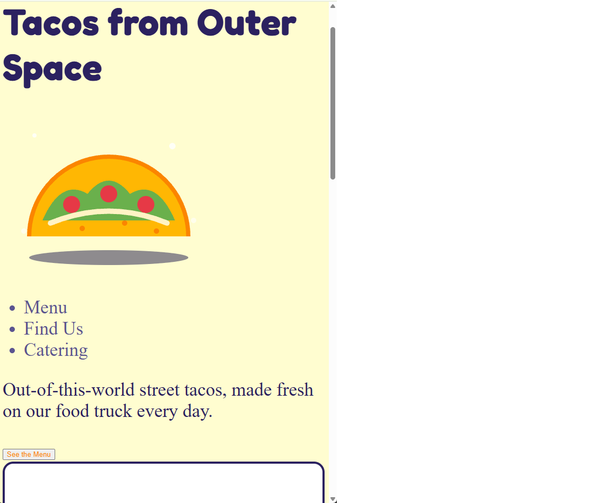

Replica Challenge
November 5, 2026
My work
Our team's site
The part I built
[Which part and what is in it]
The two hardest things to match
- [changing the colors, i pressed tab and it helped me do my work]
- [the hardest thing to match was the layout,I fixed it by learning how to use CSS grid and flexbox effectively]
My part next to the mockup
